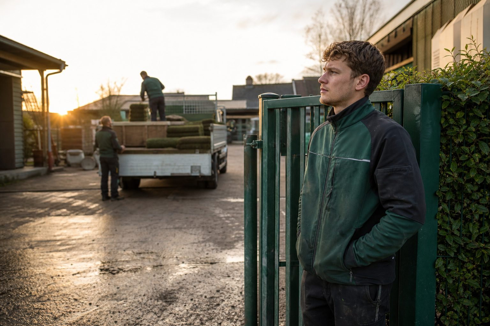

Die Branche hat kein Nachwuchsproblem. Sie hat ein Bleibeproblem.
8.089 Auszubildende, so viele wie lange nicht – und trotzdem fehlen überall Leute. Wer die Zahlen nebeneinanderlegt, sieht: Der GaLaBau verliert seine Fachkräfte nicht an der Schule, sondern im dritten Jahr nach der Prüfung.
3 Min. Lesezeit